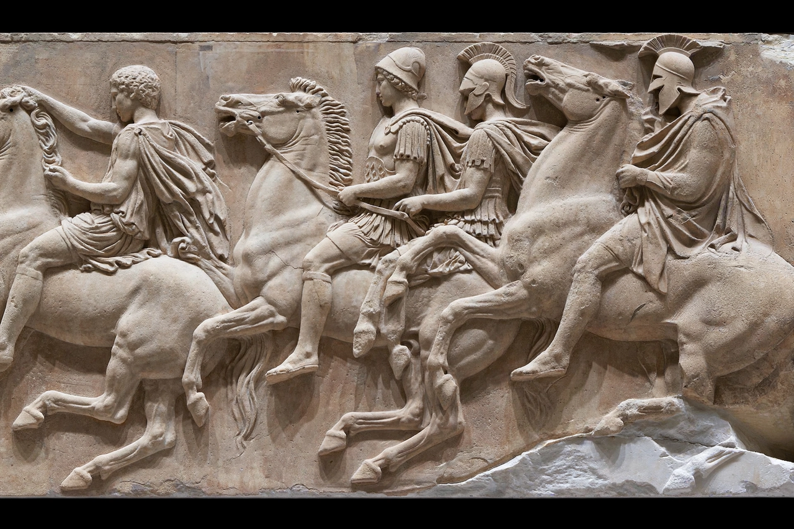

The Parthenon Sculptures are a collection of Classical Greek marble sculptures made under the supervision of the sculptor Phidias and his assistants for the Parthenon in Athens, built between 447 and 432 BC. They consist of the frieze of the Panathenaic procession, the metopes depicting mythological battles, and the pedimental figures of gods and heroes. A substantial portion is held by the British Museum in London — where they are also called the Elgin Marbles — while others are in the Acropolis Museum in Athens and several other collections.
The sculptures adorned the temple of Athena for two millennia, surviving conversion into a church and then a mosque, but suffered catastrophic damage in 1687 when a Venetian shell ignited the Ottoman gunpowder stored inside, blowing off the roof. Between 1801 and 1812, agents of Thomas Bruce, 7th Earl of Elgin, the British ambassador to the Ottoman Empire, removed roughly half of the surviving sculpture and shipped it to Britain. Parliament purchased the collection for the British Museum in 1816.
Greece has formally requested the return of the sculptures since the 1980s, arguing they were removed under a questionable Ottoman permit and form an integral part of a single monument; the Acropolis Museum, opened in 2009 with a gallery aligned to the Parthenon, displays the Athens-held pieces with plaster casts marking the London sections. The British Museum maintains that Elgin acted legally and that the sculptures are best kept in a universal museum, though discussions of a long-term loan or partnership arrangement have been reported in recent years. The dispute is the world's most prominent case in debates over cultural property and museum restitution.